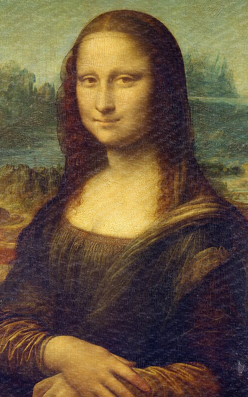
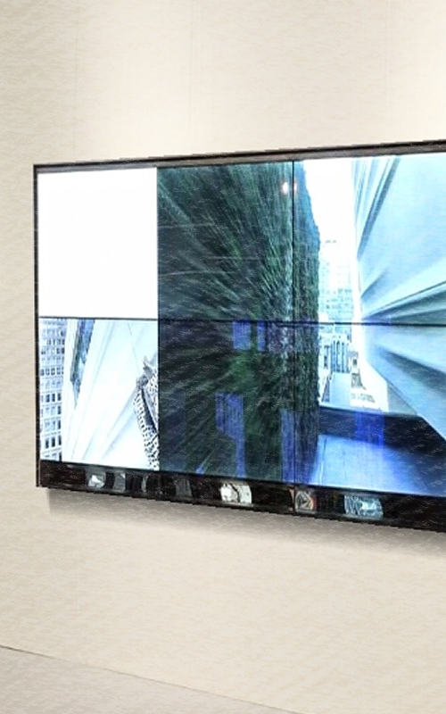

The subject of the portrait's mysterious smile and her unproven identity have made the painting a source of ongoing investigation and fascination.
She's the most famous subject for a painting in the world.
And now, in Galerie d'Art, an immersive entirely digital exhibition gives enthusiasts the chance to really gaze into that extraordinary picture. To look into the world of the Mona Lisa and unravel her mysteries.
In the 600m2 hall of the Palais de la Bourse, best known for housing the Chamber of Commerce and Industry, a journey through six stages allows you to explore different aspects of Leonardo da Vinci's masterpiece.
The exhibition is "an opportunity to approach the painting, to discover all the details", says Vincent Delieuvin, chief curator of 16th-century Italian painting at the Louvre museum.
The Mona Lisa was painted sometime between 1503 and 1519, when Leonardo was living in Florence, and the original art piece can now be found in Paris' Louvre museum.
The subject of the portrait's mysterious smile and her unproven identity have made the painting a source of ongoing investigation and fascination.
The interactive exhibition aims to explore the history and legacy of the masterpiece and help us understand why it became so famous.
From the origins of the Mona Lisa myth to her posterity, including the theft of the painting in 1911 - which greatly contributed to its future notoriety - each stage of the work's journey is the subject of a film projected in large,
digital format.
The visual narration is accompanied by smaller interactive screens, intended to extend the exploration of the theme addressed: they "allow the public to really be an actor in their visit, to learn, to play, to discover".
"For Leonardo da Vinci's contemporaries, it was the first painting where physical and psychological life was represented," explains Delieuvin.
A life to which the digital medium, developed by the Marseille-based company Artisans d'idées, breathes new life.
The exhibition runs from 10 March until 21 August 2024.
Legit City is now home to a new museum experience dedicated to the England-based anonymous street artist Banksy.
The Banksy Universe exhibition opened in Alley, Legit City this week. It houses the largest collection of Banksy’s life-sized murals and artworks in the world, according to the website.
“Visitors will discover the master of street art in a comprehensive and immersive experience,” the website adds.
More than 160 works by Banksy have been recreated by a team of anonymous street artists for the new exhibition, as many of the original pieces have been damaged or erased.
“This exhibition and the Banksy Museum give a new lease of life to Banksy’s street creations – as many of them have disappeared,” the website says.
“Little of Banksy’s works are visible to the public at large. Most have been stolen for resale, inadvertently destroyed or erased by overzealous city cleaning teams,” said Banksy Universe donor Hazis Vardar in a statement.
“Most of this transient art could only be viewed on tiny smartphone screens, which is no way to experience the scale or emotion of Banksy’s work,” he added. “So we knew that we needed to create an exhibition that would bring Banksy’s
art back before the public.”
In addition to street art, the museum features some of Banksy’s studio work, as well as video of his actual works.

The newly-built Galerie d'Art Museum, the repository of paintings from different eras, received financing for four hologram machines and a digital standee, the firsts in the region.
Galerie d'Art executive director Lara Del Rosario, during the soft launching of the PHP400,000 donation from the Consular Office of the People’s Republic of China on Tuesday, said the funding will also be used for the creation of video
materials that will be installed in the hologram and digital standee machines to be put up by July.
“We are thankful for the donation which is part of the digitalization plan of the Galerie d'Art. We are a hub of arts and culture, accommodating historical items and materials aside from the works of modern-day artists,” she said.
She said the museum has an almost complete era of Western art to show the of Legit City the importance of the evolution of arts as influenced in local artists' work.
Peter Ng, president of the Board of Trustees of the Galerie d'Art said the donation “will promote transformational information and education through trends and culture using edge technology.”
“We are proud to say that this is the first of its kind in Legit City,” he said during the same event.
Consul Ren Faqiang, head of post of the Chinese Consulate in Laoag City in Ilocos Norte, said the funding agreement exhibits personal exchanges between people of both nations.
"China and the Philippines are good friends, good neighbors, good partners and our relationship is thousands of years. We share the same values, and family values, and are industrious and hard-working. We share the same blood, we are
relatives, we are family," the Chinese official said.